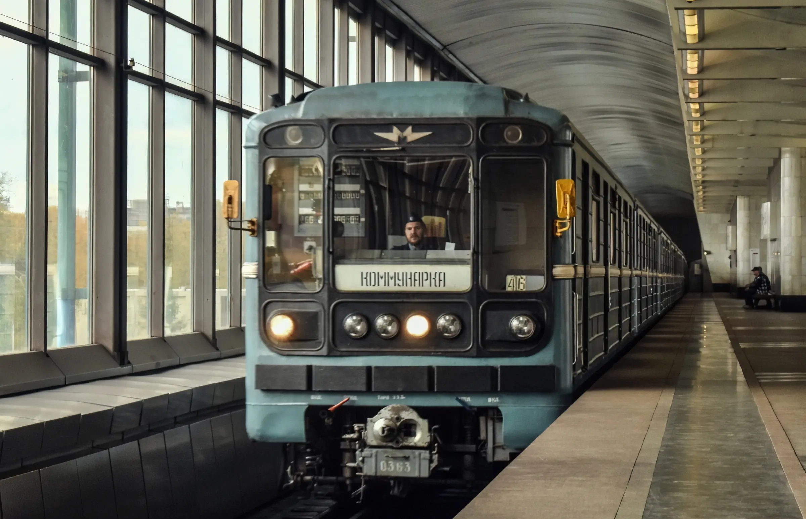
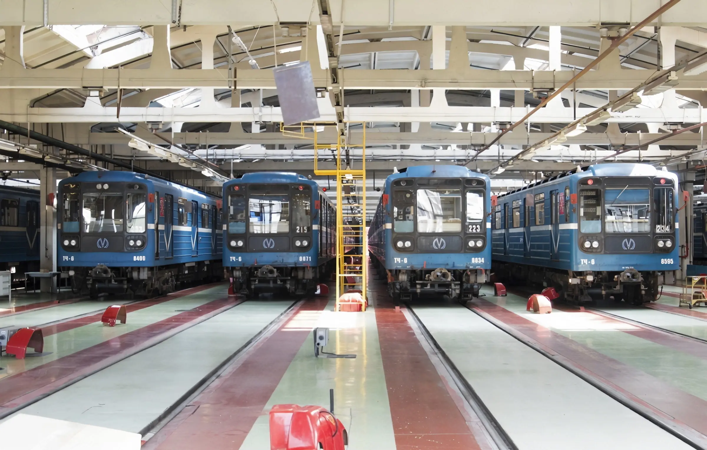
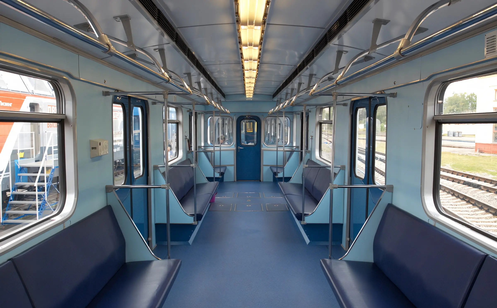
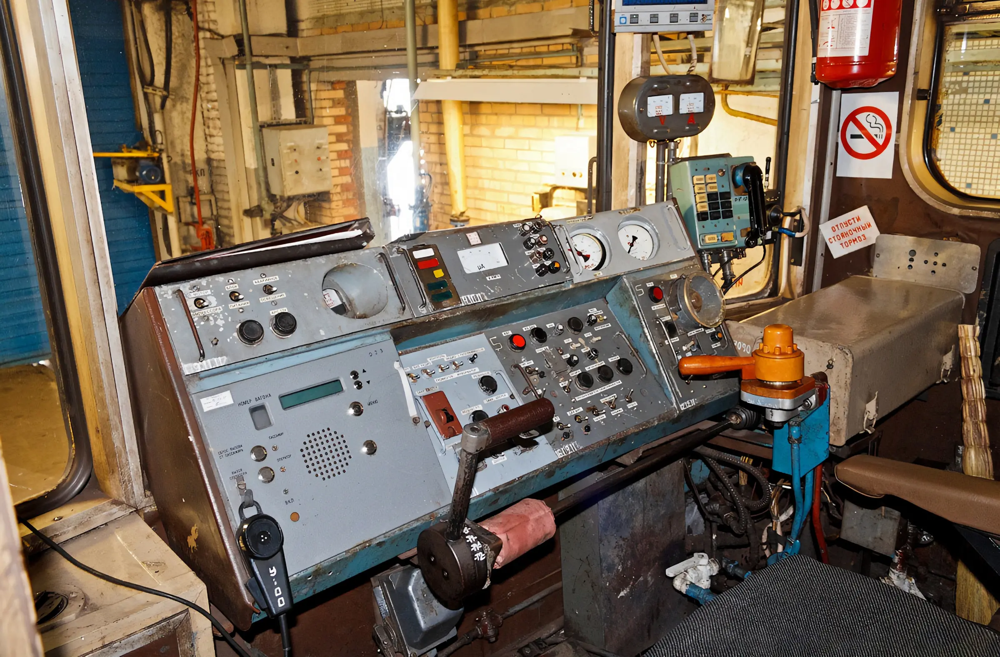

Характеристики «Номерных» одинаковы, но различны в мелких деталях
Метропоезд 81-717 «Номерной»
81-717 / 714 — 81-71 - серия, 7 - головной, 4 - прицепной. Выпускается с 1976 на Ленинградском вагоностроительном заводе, Метровагонмаш, Октябрьском электровагоноремонтном заводе. Построено 1192 вагона.
Первый тип метропоезда, название которого состоит только из цифр. Серия планировалась для испытаний оборудования, которое должно было применяться в буквенной серии И. Из-за острой нехватки электропоездов данная серия запущена в серийное производство.
Из нововведений здесь отсутствуют кабины машиниста в промежуточных вагонах, увеличена мощность тяговых электродвигателей до 114 кВт (456 кВт на вагон), улучшена электроника.
Заводские обозначение:
- Моторный-головной — 81-717
- Моторный-промежуточный — 81-714
Технические Характеристики:
Г-головной, П-промежуточный
- Вместимость — Nx330 чел.
- Высота — 3650 мм
- Длина — N × 19 206 мм
- Ширина — 2670 мм
- Колея — 1435 и 1520 мм
- Конструкционная скорость — 90 км/ч
- Минимальный радиус прохождения кривых — 60 м
- Мощность ТЭД — N × 4×118 кВт (N×472 кВт)
- Тип ТЭД — коллекторные, ДК117Д
- Род тока — переменный (380 В), постоянный (825 В)
- Служебная масса — 2×34 т (68 т) (Г) и N×33,5 т (П)
- Составность — 2-8 вагонов
Последователи:
- Метропоезда серий И, 81-540, 81-550, 81-718, 81-720.1 ЛВЗ, 81-725.1 «Балтиец», 81-740 «Русич», 81-765 «Москва» и 81-760 «Ока»
- Кузов использован для электровоза ВЭКА
Эксплуатация
- Азербайджан: Баку
- Армения: Ереван
- Беларусь: Минск
- Болгария: София
- Венгрия: Будапешт
- Грузия: Тбилиси
- Польша: Варшава
- Россия: Екатеринбург, Москва, Нижний Новгород, Новосибирск, Самара, Санкт-Петербург
- Узбекистан: Ташкент
- Украина: Днепр, Киев, Харьков
- Чехия: Прага
  
сделали Лядов Тимофей и Никитин Станислав